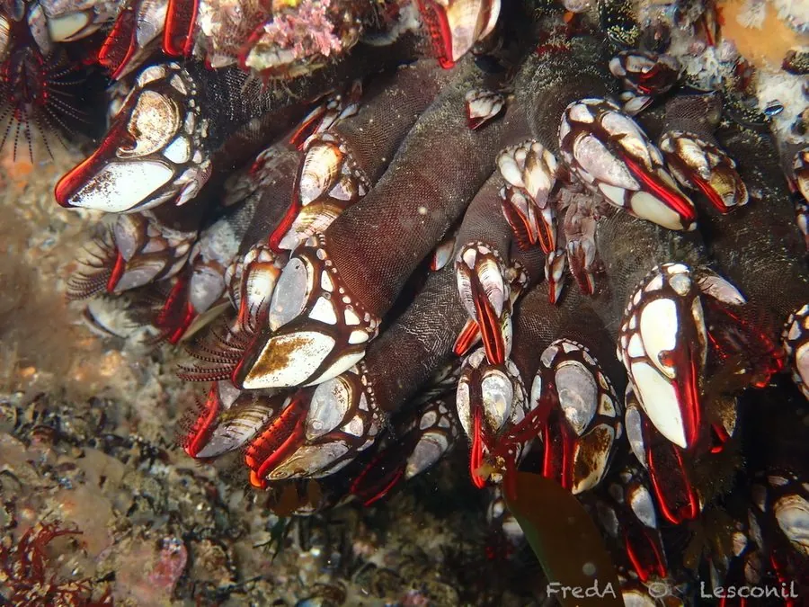

甲壳动物 · 动物界
龟足 Pollicipes pollicipes

外形像龟脚的柄部藤壶，终生附着在浪大的岩礁上，是葡萄牙和西班牙当地的名贵海鲜，价格昂贵，采集充满风险。
- 分类
- 门节肢动物门纲蔓足纲目有柄目科龟足科属龟足属
- 栖息环境
- 风浪较大的岩礁海岸，终生固着在岩石上
- 地理分布
- 东北大西洋和地中海沿岸，如葡萄牙、西班牙和摩洛哥
- 保护级别
- 暂无评估；受过度采捕影响
物种志
龟足由柄部和壳部组成，柄部粗短、黑褐色、表面有细纹，壳部由多块白色壳板组成，形似龟脚或佛手，全长约 5–10 cm。它属于有柄目藤壶，与常见的无柄藤壶不同。
它生活在风浪较大的岩礁海岸，终生固着在岩石上，靠伸出蔓足滤食浮游生物和有机颗粒。龟足分布于东北大西洋和地中海沿岸，在葡萄牙、西班牙是价格昂贵的地方美食，被称为 percebes，采集者需要在浪大的礁石上冒险采捕。近年来因过度采捕和海岸环境变化，部分地区的资源下降，葡萄牙和西班牙都实行了采集许可和休渔期管理；它也是研究潮间带生物适应波浪环境的对象。龟足的柄部可食，口感鲜甜，是当地节庆餐桌上的佳肴。
形态与习性
- 食性滤食浮游生物和有机颗粒
- 体型全长约 5–10 cm
- 外形柄部黑褐色，壳部白色，形似龟脚
- 栖息风浪大的岩礁海岸，终生固着
- 经济葡萄牙、西班牙的名贵海鲜
- 管理采集许可和休渔期保护资源
趣味知识
- 龟足的外形像一只小龟脚，因此在中文里得名龟足。
- 它在葡萄牙和西班牙是价格昂贵的美食，采集者要冒着大浪去采。
- 龟足是藤壶的近亲，但属于有柄的类群。